프로젝트 개요
GovBiz는 정부지원사업 탐색부터 신청 준비까지 연결하는 AI 서비스입니다. 여러 기관에 흩어진 공고를 모아, 기업의 조건과 목적에 맞는 사업을 찾고 신청 준비와 진행 상황까지 관리할 수 있도록 돕습니다.
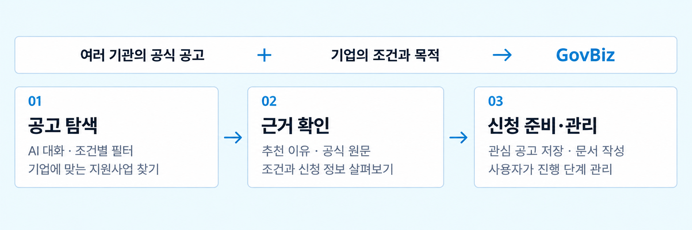
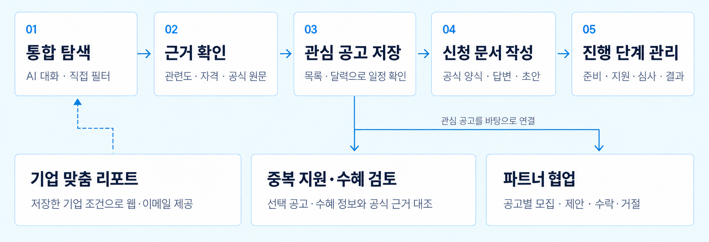
시스템 아키텍처
GovBiz는 화면·업무 처리·AI 실행의 책임을 분리하고, 검색·데이터 저장·배포를 아래 구조로 연결했습니다.
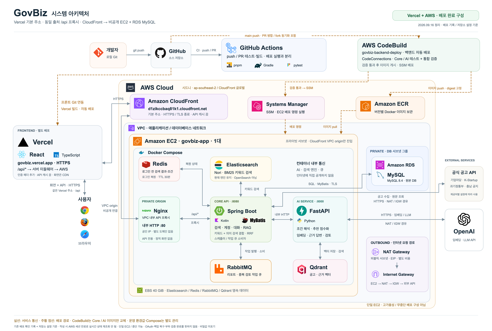
실선은 서비스 통신, 주황 점선은 배포 경로입니다.
- 서비스: React는 화면, Core API는 업무 처리·검색 결합·응답 검증, AI Service는 의미 검색·LLM 실행을 담당합니다.
- 데이터: MySQL을 원본으로 두고, Elasticsearch·Qdrant는 검색 색인, Redis는 임시 검색 결과 보관, RabbitMQ는 비동기 작업 전달에 사용합니다.
- 운영: 프론트엔드는 Vercel에서 제공하고, EC2·RDS는 프라이빗 네트워크에 배치했습니다. 백엔드는 CodeBuild·ECR·SSM을 통해 배포합니다.
1. Elasticsearch(Nori·BM25)와 Qdrant hybrid 검색에 RRF·LLM 재순위화를 적용, RAG 응답 기능 구현.
해결하려던 문제
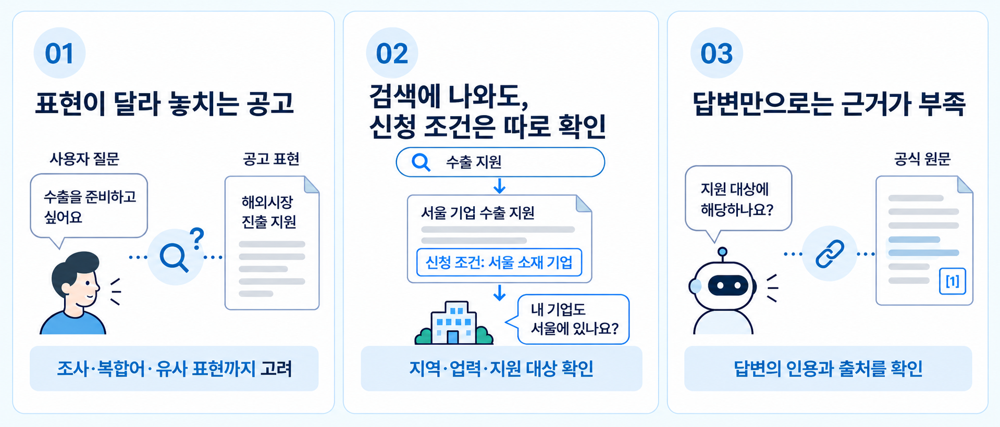
설계와 구현
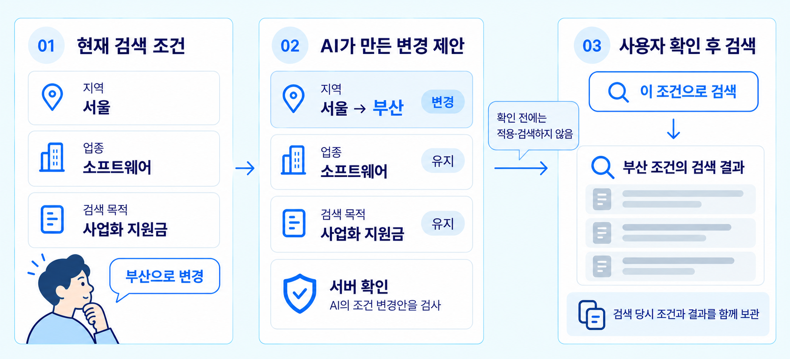
서버가 AI의 조건 변경안을 검사하고, 사용자가 확인한 뒤 검색합니다. 검색 당시 조건은 결과와 함께 보관합니다.
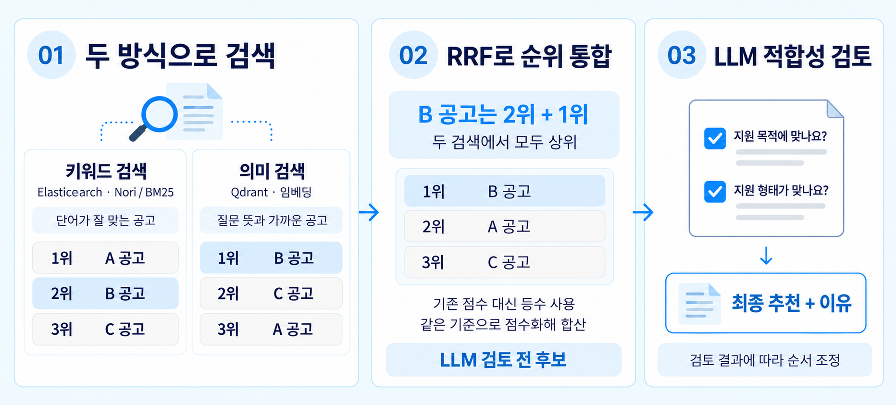
키워드 검색과 의미 검색에서 찾은 공고를 각 검색의 순위를 기준으로 합칩니다. 이후 LLM이 지원 목적과 지원 형태에 얼마나 맞는지 살펴 최종 추천과 이유를 구성합니다.
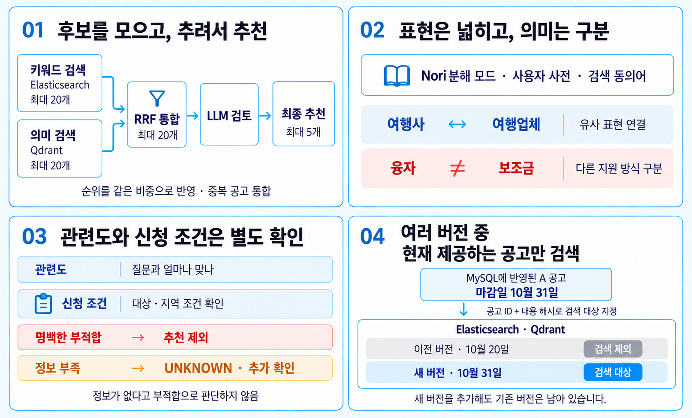
- 두 검색 경로에서 각각 최대 20개 후보를 수집하고, 동일 가중치의 RRF로 최대 20개를 결합한 후 최종 최대 5개를 반환하도록 구성했습니다.
- 지명·복합어 분석과 유사 표현의 누락을 점검해 Nori 분해 모드, 사용자 사전, 검색 시점 동의어를 보완했습니다. 신청 범위가 달라지는 ‘융자=보조금’ 같은 동의어는 추가하지 않았습니다.
- 관련도 점수와 대상·지역의 자격 판정을 분리했습니다. 명백한 부적합은 제외하고, 정보가 부족한 조건은
UNKNOWN으로 유지해 추가 확인이 필요함을 드러냈습니다. - 여러 버전 중 현재 제공하는 공고만 검색: 검색 저장소에는 기존 버전과 새 버전이 함께 있을 수 있습니다. MySQL에 반영된 공고의 ID와 내용 해시를 기준으로, 검색할 버전을 지정합니다.
한계와 개선 방향
- 규모가 커질 때의 비용: 검색 요청마다 MySQL에서 검색 가능한 공고를 읽고, 대상 공고의 버전 식별 목록을 검색 서비스에 전달합니다. 대상이 1만 건이면 식별 정보도 1만 건이므로, 공고 수와 동시 요청이 늘수록 DB 조회·네트워크 전송·검색 필터 처리 비용이 커질 수 있습니다.
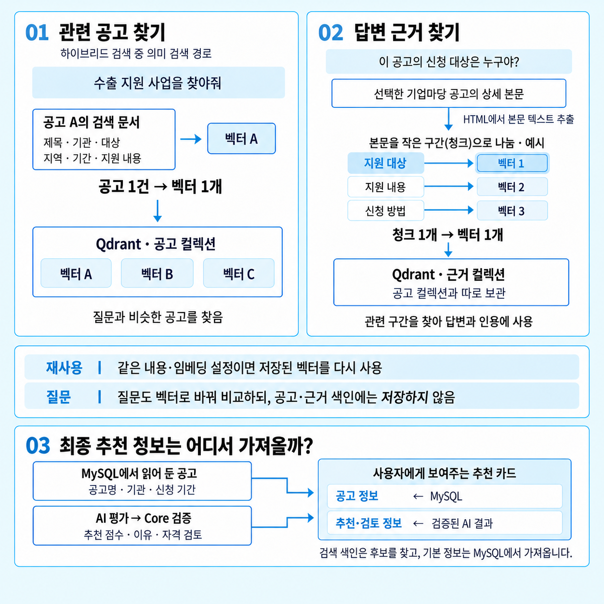
01 공고 검색 — 관련 사업 찾기
제목·기관·대상·지역·기간·지원 내용을 묶어 공고 1건당 벡터 1개를 만듭니다. Qdrant의 공고 컬렉션에서 질문과 의미가 비슷한 사업을 찾습니다.
02 상세 RAG — 답변 근거 찾기
선택한 기업마당 공고의 HTML 본문을 작은 구간(청크)으로 나누고 청크마다 벡터 1개를 만듭니다. 별도의 근거 컬렉션에서 관련 구간을 찾아 답변과 원문 인용에 활용합니다.
벡터 재사용과 질문 처리
- 공고·근거 벡터: 내용과 임베딩 설정이 같으면 저장된 벡터를 재사용합니다.
- 질문 벡터: 검색에 사용하며, 공고·근거 색인에는 저장하지 않습니다.
03 최종 추천 — 정보의 출처 (아래에서 더 자세히 설명)
- 공고명·기관·신청 기간: MySQL에서 미리 읽어 둔 공고 정보
- 추천 점수·이유·자격 검토: AI가 생성하고, Core가 공고 ID·점수 계산·응답 형식·자격 근거 인용을 확인한 결과
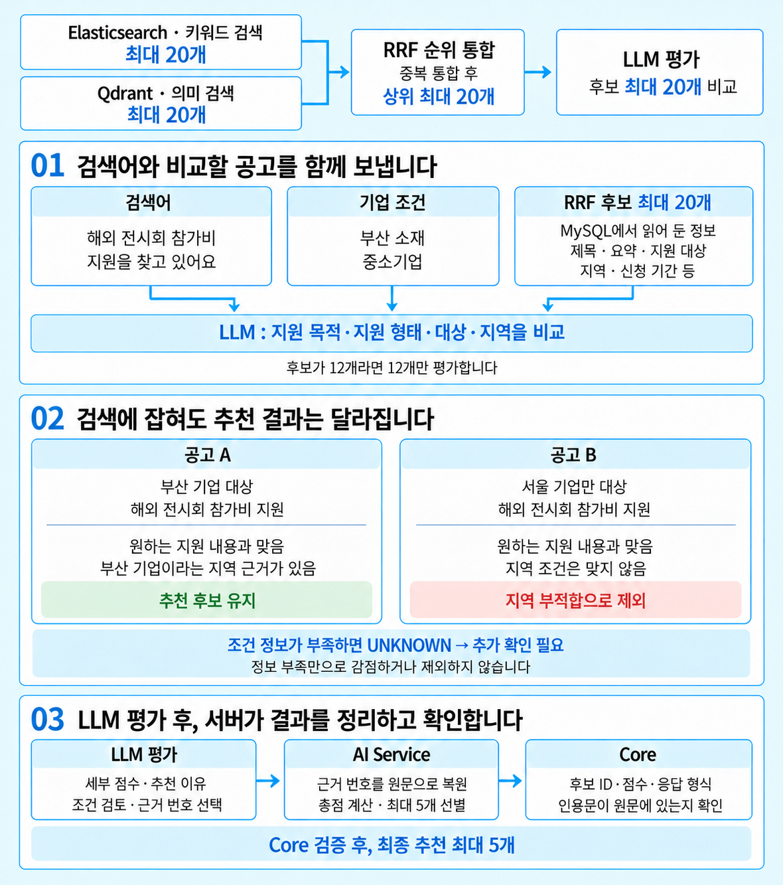
검색어는 원하는 지원을, 후보 공고는 비교할 내용을 알려줍니다. LLM은 이를 기업 조건과 함께 비교해 점수·추천 이유·조건 검토 결과를 만듭니다.
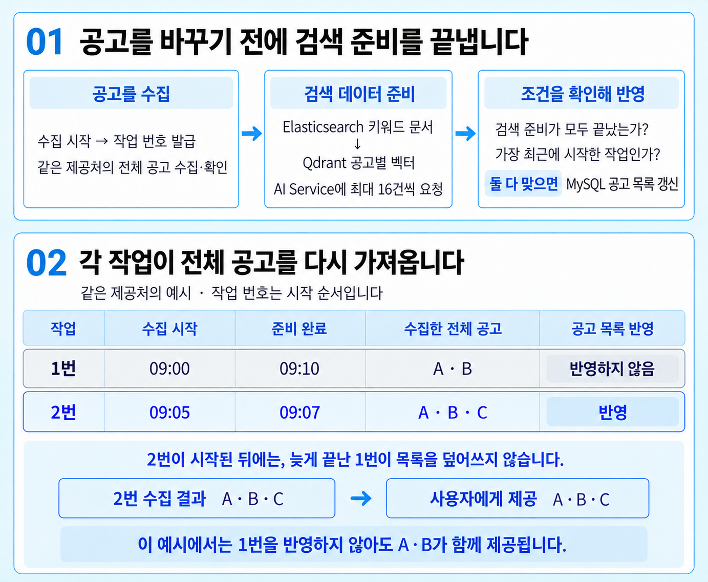
준비와 반영: 같은 내용·임베딩 설정의 벡터는 재사용합니다. 두 검색 데이터의 준비와 최신 작업 확인을 마치면 MySQL의 공개 공고 목록을 한 번에 갱신하고, 검색 시에도 현재 목록과 같은 내용의 검색 데이터만 사용합니다.
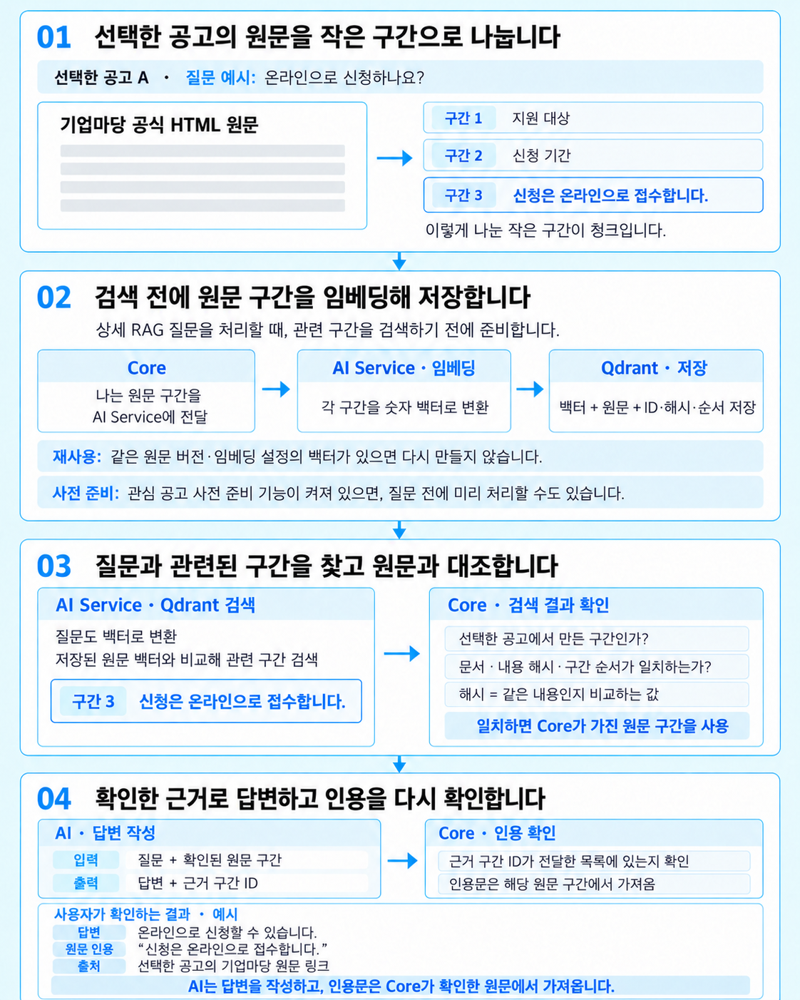
- 검색 준비: 원문 구간을 벡터로 만들어 Qdrant에 저장합니다. 원문 버전과 임베딩 설정이 같으면 재사용합니다.
- 근거 검색: 질문도 벡터로 바꿔 관련 원문 구간을 찾습니다.
- AI 답변 작성: AI Service는 답변과 근거 구간 ID를 Core에 반환합니다.
- Core 인용 확인: 반환된 근거 구간 ID가 AI에 제공한 원문 구간 목록에 있는지 확인하고, 해당 구간의 원문을 인용으로 제공합니다.
- 예외 처리: 근거 부족은
INSUFFICIENT_EVIDENCE로 알리고, 검색 장애·잘못된 인용은 오류로 처리합니다.
문제 해결 사례 — 근거 구간 ID 오류
① 긴 ID는 코드가 찾아 넣고, AI는 구간 번호만 선택하게 했습니다.
발견한 문제: 원문 구간마다 64자리 ID가 있습니다. AI가 근거 구간 ID를 직접 옮겨 적다가 한 글자를 빠뜨려, 63자리 ID를 반환한 사례가 있었습니다. Core는 전달한 근거와 ID가 일치하지 않아 응답을 오류로 처리했습니다.
개선한 방식: LLM은 답변을 작성하고, 근거로 사용한 구간 번호만 반환합니다. 이후 AI Service의 일반 Python 코드가 이미 받은 구간 목록에서 해당 번호의 근거 구간 ID를 꺼내 Core에 전달합니다.
LLM과 코드의 역할: 이 처리는 SupportProgramEvidenceAnswerAgent 클래스 안에 있지만, ID 변환은 LLM의 판단이나 Tool 호출이 아닌 일반 코드의 후처리입니다. LLM이 0번을 선택하면 코드는 request.chunks[0].id를 읽습니다.
이해를 위한 예시
AI에게 전달한 근거
0번: 온라인으로 신청합니다.
1번: 마감일은 10월 31일입니다.
AI가 반환
답변: 온라인으로 신청할 수 있습니다.
사용한 구간 번호: 0
AI Service 코드가 처리
0번 구간의 실제 64자리 ID를 찾아 Core에 전달
긴 ID를 옮겨 적는 일을 AI 대신 코드가 맡도록 바꾼 것입니다. Core는 기존처럼 citationChunkIds에 근거 구간 ID를 받으므로, 서비스 간 응답 형식은 유지했습니다.
2. Core API와 AI Service의 책임 분리
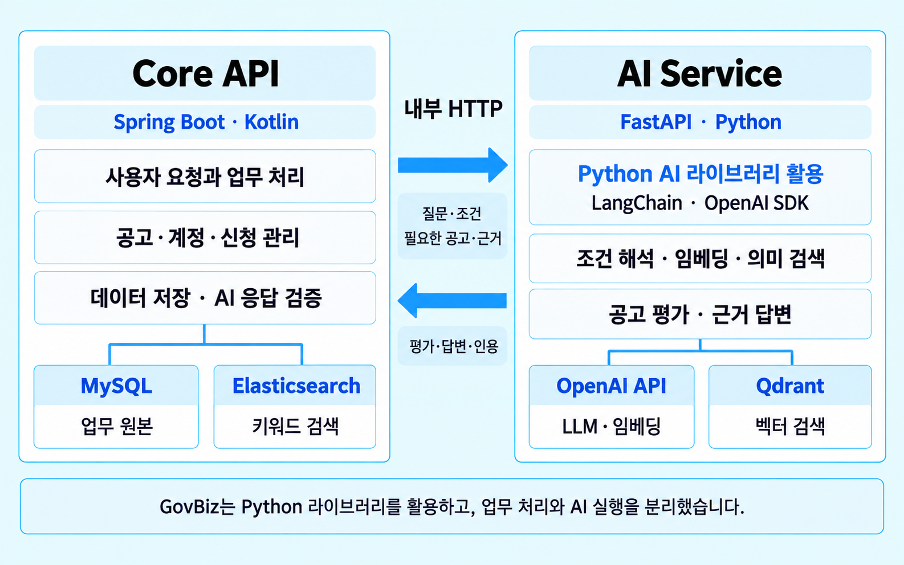
분리한 이유
Python의 LangChain·OpenAI SDK와 임베딩·검색 도구를 활용하기 위해 AI 기능을 FastAPI로 분리했습니다. 계정·공고·신청 관리와 데이터 저장은 Spring Boot에 두어, 업무 기능과 AI 처리 로직을 각각 변경하고 관리할 수 있도록 했습니다.
요청 흐름
- Core API(Spring Boot): 사용자 요청을 받고 계정·공고·신청 관리, MySQL 데이터 조회·저장을 담당합니다.
- AI Service(FastAPI): Core가 보낸 질문·조건과 필요한 공고·근거를 받아 임베딩·벡터 검색·LLM 평가와 답변 생성을 수행합니다. MySQL에는 직접 접근하지 않습니다.
두 서비스는 API로 통신합니다. 브라우저 → Core → AI Service → Core → 브라우저 순서로 요청과 결과가 오갑니다.
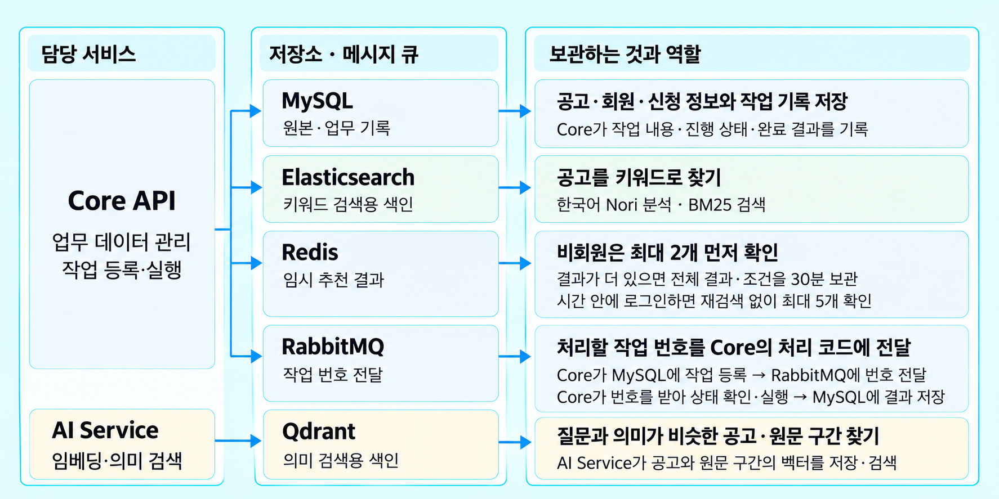
공고 데이터 관리
- 형식 통일: 네 제공처의 공고를 같은 형식으로 정리하고, ‘제공처 코드 + 원본 ID’로 구분합니다.
왜 제공처와 공고 번호를 함께 사용할까요?
공고 번호가 같아도 제공처가 다르면 서로 다른 공고입니다. 제공처 코드는 어디에서 가져왔는지, 원본 ID는 그 제공처가 부여한 공고 번호를 뜻합니다.
예를 들어 기업마당과 K-Startup이 모두 공고 번호
123을 사용한다고 가정해 보겠습니다.- 기업마당의 123번 공고:
BIZINFO:123 - K-Startup의 123번 공고:
KSTARTUP:123
123만 사용하면 두 공고를 같은 것으로 착각할 수 있습니다. 그래서 ‘어느 제공처의 몇 번 공고인가’를 함께 확인해 구분합니다. - 기업마당의 123번 공고:
- 신청 상태: 신청 기간과 오늘 날짜(서울 기준)로 계산합니다.
- 수집 실패: 전체 수집을 완료하지 못하면 기존 공개 데이터를 유지합니다.
- 원문 수집: 상세 RAG용 공식 HTML은 공고 목록과 별도로 수집합니다.
비회원 추천 결과 보관 — Redis
- 먼저 보기: 비회원에게 추천 공고를 최대 2개 보여줍니다.
- 로그인 후 이어 보기: 결과가 더 있으면 전체 추천(최대 5개)과 검색 조건을 30분간 보관합니다. 그 안에 로그인하면 재검색·AI 재평가 없이 전체 결과를 봅니다.
- 보관 기준: 검색 당시 결과를 유지하며, 처음 복원한 로그인 계정만 다시 볼 수 있습니다. 30분이 지나면 임시 결과는 만료됩니다.
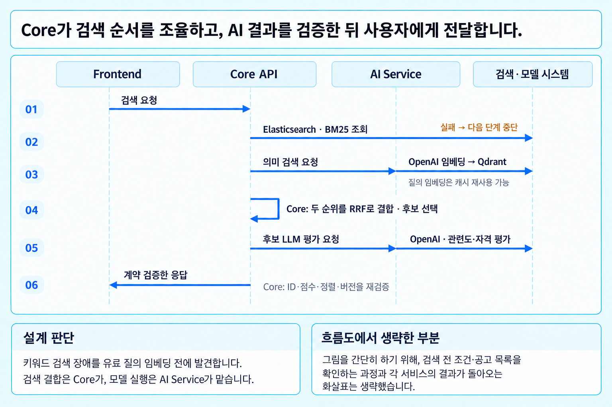
Core는 AI 응답을 검사한 뒤 사용자에게 전달합니다.
- 내용 확인: 요청한 후보의 공고 ID인지, 점수가 정해진 범위와 계산식을 지키는지, 근거와 인용이 전달한 원문에 연결되는지 확인합니다.
- 오류 구분: 연결 실패·시간 초과·잘못된 응답을 구분해 공통 오류 형식으로 반환합니다. 처리 실패를 정상적인 “검색 결과 없음”으로 바꾸지 않습니다.
- 응답 구성: AI 통신용 데이터와 사용자 API 응답을 분리하고, 검증을 통과한 결과를 사용자 응답으로 구성합니다.
그림에서 생략한 실제 처리 과정
- 검색 전 준비: Core가 검색 조건을 확인하고, MySQL에서 검색 가능한 공고와 버전 정보를 읽어 검색 대상을 정합니다.
- 결과 반환: Elasticsearch 검색 결과는 Core로, Qdrant 검색 결과와 LLM 평가 결과는 AI Service를 거쳐 Core로 돌아옵니다. Core는 두 검색 결과를 받은 뒤 RRF로 결합하고, 이후 받은 AI 평가 결과를 검사해 사용자에게 전달합니다.
3. 백엔드 레이어드 구조와 프론트엔드 클린 아키텍처·MVVM·Flux
백엔드: 기능 안에서 책임과 경계 구분
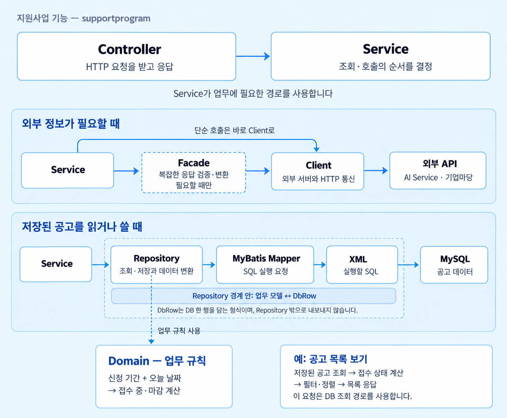
- 요청과 업무: 기능별 디렉터리에서 Controller는 HTTP 요청을 받고, Service는 업무 흐름을 조율합니다.
- 외부 통신: Client가 외부 API를 호출합니다. AI 추천의 공고 ID·점수·근거, RAG 인용 구간처럼 여러 검증이 필요한 응답은 Facade에서 확인하고 내부 결과로 정리합니다. 단순 호출에는 Facade를 추가하지 않습니다.
코드 예시 — Facade는 AI 추천 응답을 어떻게 검증할까?
실제 코드 핵심 발췌 — AI 추천 Facade
AiSupportProgramRankingFacade.kt에서 검증 흐름을 보여주는 부분만 골랐습니다. 아래 코드는 서로 다른 함수의 발췌이며, 요청 구성·반복문·일부 검증은 생략했습니다.
1. Client로 AI를 호출하고, 응답 검증이 실패하면 오류로 처리합니다.
val payload = client.rankSupportPrograms(request)
return validate(payload, query, candidates, request)
?: throw AiServiceCallException.invalidResponse(
"AI Service support program rankings violated the internal contract",
null,
)
validate() 안에서 문제가 발견되면 null을 반환합니다. 호출부는 이를 정상 결과로 내보내지 않고 오류로 바꿉니다.
2. 보낸 공고인지 확인하고, 점수 범위와 합계를 검사합니다.
// validate() 내부: 요청 후보에 없는 공고와 중복 추천을 거부
val programId = ranking.programId ?: return null
val candidate = candidatesById[programId] ?: return null
if (!seenIds.add(programId)) return null
val score = validatedScore(ranking) ?: return null
// 점수 검증 함수
private fun validatedScore(ranking: AiScoredSupportProgramPayload): Int? {
val semantic = ranking.semanticRelevance?.takeIf { it in 0..40 } ?: return null
val supportType = ranking.supportTypeFit?.takeIf { it in 0..10 } ?: return null
val total = ranking.totalScore?.takeIf { it in 0..MAX_TOTAL_SCORE } ?: return null
return total.takeIf { it == 2 * (semantic + supportType) }
}
예를 들어 A·B 공고만 보냈는데 C를 추천하면 실패합니다. 의미 점수 30점과 지원 형태 점수 8점이라면 총점은 2 × (30 + 8) = 76이어야 합니다. MAX_TOTAL_SCORE는 100입니다.
3. AI가 자격 검토의 근거로 인용한 문장이 실제 전달한 공고 내용에 있는지 확인합니다.
val sourceText = when (field) {
AiSupportProgramEligibilityEvidenceField.SUMMARY -> candidate.summary
AiSupportProgramEligibilityEvidenceField.TARGET_DESCRIPTION -> candidate.targetDescription
}
if (!sourceText.contains(quote)) return null
예를 들어 AI가 “부산 소재 기업”을 인용했다면, AI에 보낸 해당 공고의 요약 또는 지원 대상 필드에 그 문장이 실제로 포함되어 있어야 합니다.
4. 검증을 통과한 평가를 기존 공고 객체에 붙여 Service에 돌려줍니다.
programs += candidate.program.copy(
matchedReasons = reasons,
recommendationScore = score,
eligibilityReview = review,
)
공고명·기관 등은 기존 공고 정보를 유지하고, 검증한 추천 이유·점수·자격 검토 결과를 추가합니다. reasons와 review도 앞선 검증을 통과한 값입니다.
- DB 접근: Repository가 저장·조회와 업무 모델 ↔
DbRow변환을 통해, DB 데이터를 서비스에서 사용할 공고 객체로 변환합니다. MyBatis Mapper·XML의 SQL 매핑을 Repository 내부에서 처리해서 경계 안에 둡니다. - 업무 규칙: 접수 상태 계산처럼 프레임워크와 무관한 규칙은 Domain에 둡니다.
프론트엔드: 의존 방향, 화면 로직, 공유 상태 분리
화면·업무·서버 통신을 분리하고 ViewModel을 통해 화면과 업무 호출을 연결하는 구조를 설계했습니다. 아래는 설계 기준과 대표 적용 흐름이며, 모든 기능에 일관되게 적용하지는 못했습니다.
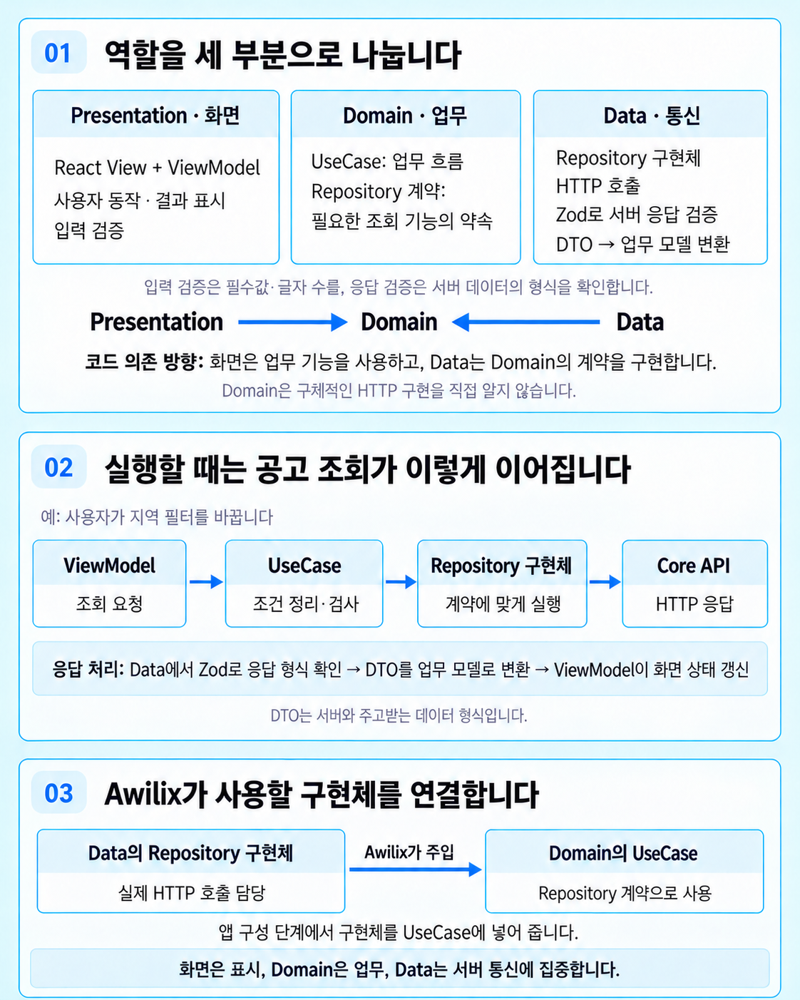
- 화면(Presentation): 사용자 입력을 확인하고 업무 기능을 호출해 결과를 표시합니다.
- 업무(Domain): UseCase가 업무 흐름을 처리하고, Repository 계약으로 데이터를 요청합니다.
- 통신(Data): HTTP로 받은 서버 응답을 Zod로 검증하고, DTO를 업무 모델로 변환합니다.
- 연결(Awilix): 실제 Repository 구현체를 UseCase에 주입합니다.
의존 방향: Presentation → Domain ← Data
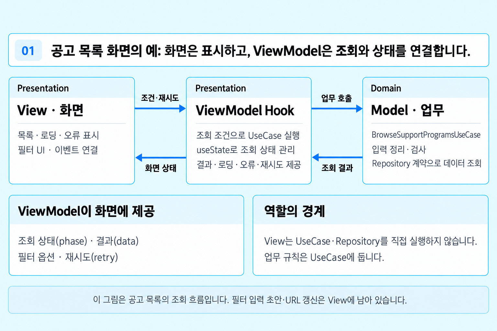
공고 목록 조회: View → ViewModel → UseCase → Repository
- View: 결과·로딩·오류를 표시하고 사용자 동작을 연결합니다.
- ViewModel: 조회 결과를 React 로컬 상태로 관리하고, 로딩·오류·재시도를 화면에 제공합니다.
- UseCase: 업무 규칙을 처리합니다.
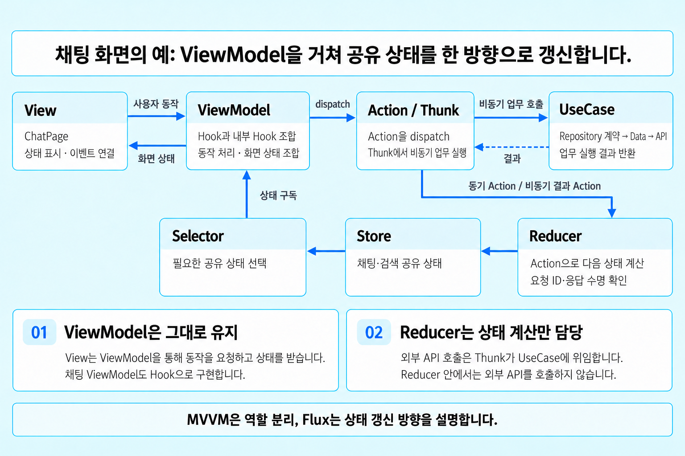
상태 흐름: View → ViewModel → Action/Thunk → Reducer → Store → Selector → ViewModel → View
- ViewModel: 화면의 사용자 동작을 Redux에 전달하고, Redux 상태를 읽어 화면에 제공합니다.
- Thunk: 채팅 검색·조건 해석처럼 공유 상태와 요청을 조율하는 작업에 사용하고, UseCase 실행 결과를 Action으로 전달합니다.
- Reducer: Action으로 다음 상태를 계산하며, API를 직접 호출하지 않습니다.
상태 관리
- Redux: 메시지·검색 등 공유 상태
- 화면 내부: 화면 전용 상태는 React 로컬 상태로 관리하고, DOM 참조는 별도로 유지합니다.
- 응답 보호: 요청 ID·AbortController로 취소되거나 오래된 응답이 최신 결과를 덮어쓰지 않게 처리
두 기능 모두 ViewModel로 화면과 처리 로직을 분리했습니다. 공고 목록은 ViewModel의 로컬 상태로 조회 결과를 관리하고, 채팅은 Redux로 공유 상태를 관리하며 Flux의 단방향 갱신 흐름을 적용했습니다.
한계와 개선 방향 — 설계와 구현의 일관성
- 적용 한계: 신청 문서 결과 화면과 리포트 이메일 확인·수신 해지 화면에서는 View가 UseCase를 직접 호출하고 요청·로딩·오류 처리도 함께 담당합니다. 화면 표시와 처리 흐름을 ViewModel로 분리하는 기준을 모든 기능에 일관되게 적용하지 못했습니다.
- 영향: 화면 변경과 요청 흐름 변경을 같은 컴포넌트에서 다루게 되어, 수정 시 함께 살펴봐야 하는 코드와 테스트 범위가 넓어질 수 있습니다.
- 개선 방향: 화면에 섞인 업무 호출·상태 처리를 역할에 맞게 ViewModel과 UseCase로 나누고, 기능별 코드 리뷰와 의존성 검사로 경계가 유지되는지 확인할 필요가 있습니다.
4. Vercel·CodeBuild·ECR·SSM 기반 CD 구축
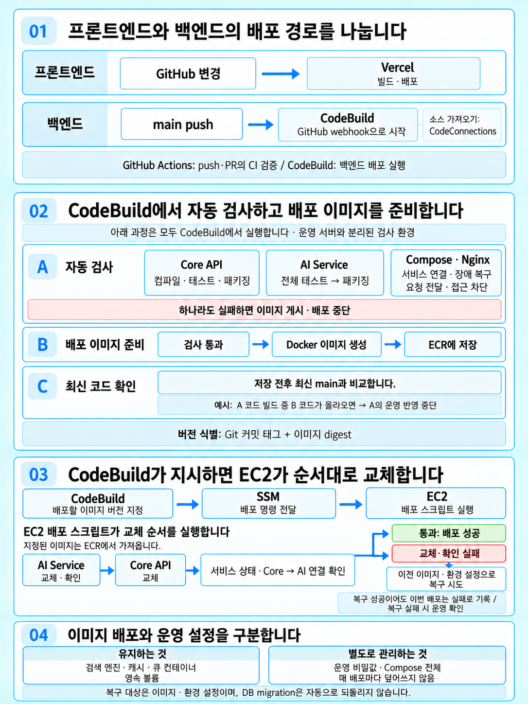
검증·이미지 빌드·배포 요청을 스크립트로 직접 작성하고, CodeBuild에서 자동 실행하도록 구성했습니다. CodeBuild는 작성한 명령을 실행할 환경과 로그를 제공합니다. EC2의 서비스 교체·상태 확인·실패 복구도 직접 작성한 배포 스크립트를 SSM으로 실행합니다.
배포 경로
- 프론트엔드: GitHub와 연동한 Vercel에서 빌드·배포합니다.
- 백엔드:
mainpush로 CodeBuild를 시작하고, CodeConnections로 소스를 가져와 검증·이미지 빌드 후 ECR에 게시합니다. SSM으로 EC2에 배포 명령을 전달합니다. - 역할 구분: GitHub Actions는 push·PR의 CI 검증, CodeBuild는 백엔드 배포 실행을 담당합니다.
운영 반영 기준
- 검증: Core clean build·테스트, AI 전체 테스트·패키지 빌드, Compose·Nginx 통합 검증을 통과해야 배포합니다.
- 버전: 커밋 태그·이미지 digest로 버전을 식별하고, ECR 게시 전후 최신
main을 확인해 오래된 빌드의 운영 반영을 막습니다. - 교체: 배포 잠금·사전 점검 후 AI Service → Core API 순서로 교체하고, 서비스 상태와 Core → AI 연결을 확인합니다.
- 복구: 교체·확인에 실패하면 이전 이미지·환경 설정으로 복구를 시도합니다. 복구에 성공해도 이번 배포는 실패로 기록합니다.
운영 설정 관리
검색 엔진·캐시·큐 컨테이너와 영속 볼륨은 유지하고, 운영 비밀값·Compose 전체는 이미지 배포와 별도로 관리합니다. DB migration은 자동으로 되돌리지 않습니다.
구현 근거: 배포 전 검증 · 이미지 게시·SSM 호출 · 교체·복구 구현
5. 프라이빗 네트워크와 API 라우팅 구성
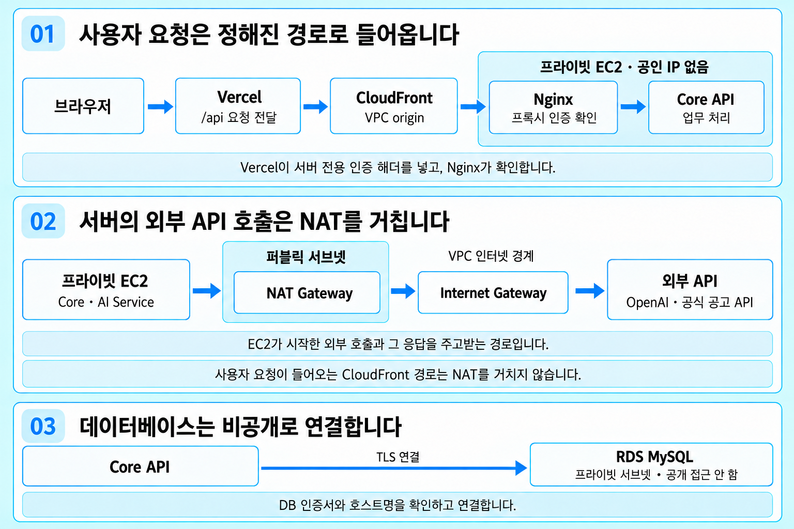
설계 목표
EC2와 DB를 인터넷에 직접 공개하지 않으면서, 사용자 요청을 받고 OpenAI·공식 공고 API를 호출할 수 있어야 했습니다.
구현 방식
EC2와 RDS MySQL은 프라이빗 서브넷에 배치했습니다. 사용자 요청은 Vercel·CloudFront를 통해 받고, 서버의 외부 API 호출은 NAT Gateway를 거치도록 경로를 나눴습니다.
| 구분 | 통신 경로 | 설계 의도 |
|---|---|---|
| 사용자 API 요청 | 브라우저 → Vercel /api → CloudFront VPC origin → Nginx → Core API | 브라우저는 화면과 같은 사이트의 /api로 요청하고, Vercel·CloudFront가 이를 공인 IP가 없는 비공개 EC2에 전달합니다. |
| 서버 외부 호출 | 프라이빗 EC2 → NAT Gateway → Internet Gateway → OpenAI·공고 API | 프라이빗 서버의 외부 API 통신 경로 확보 |
| 데이터베이스 연결 | Core API → 비공개 RDS MySQL | DB 비공개 배치 및 인증서·호스트명을 검증하는 TLS 연결 |
- 요청 확인: Vercel이 서버 전용 인증 헤더를 넣고, Nginx가 확인합니다.
- 정보 전달: Nginx는 인증 헤더를 제거하고, 신뢰한 사용자 IP를 Core API에 전달합니다.
- 캐시: 사용자별 API 응답은 캐시하지 않습니다.
- 운영 관리: SSM으로 EC2에 운영 명령을 실행합니다.
구현 근거: 배포 구성 기록 · Vercel 프록시 · Nginx 라우팅 · 운영 Compose·RDS TLS
6. 검색 이후로 이어지는 서비스 기능
이 절은 검색·RAG와 서비스 경계가 팀의 후속 업무에 어떻게 연결되는지를 설명합니다. 개인 담당 범위를 추가한 목록이 아니라 프로젝트 전체의 기능 연결을 보여주는 내용입니다.
신청 문서: 원본·사용자 답변·기입 위치를 연결
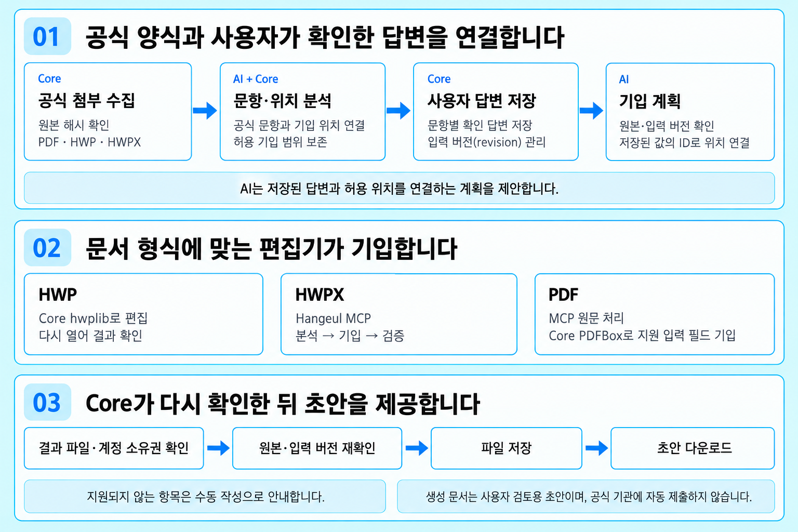
처리 흐름
- 신청서 확인: 공식 신청서 파일이 바뀌었는지 확인하고, 작성할 질문과 답변을 넣을 칸을 찾습니다.
- 답변 배치: AI가 사용자가 저장한 답변을 신청서의 어느 칸에 넣을지 정합니다.
- 초안 만들기: 프로그램이 답변을 채우고 파일이 정상인지 확인합니다. 본인의 문서인지, 작업 중 신청서나 답변이 바뀌지 않았는지도 확인한 뒤 초안을 제공합니다.
파일 형식별 처리
- HWP: Core의 hwplib로 편집 후 다시 열어 검증
- HWPX: Hangeul MCP로 분석·기입·검증
- PDF: AI Service에서 작성 위치를 확인하고, Core의 PDFBox로 저장된 답변을 기입·검증합니다.
PDF는 위치 확인과 답변 기입을 나눠 처리합니다.
- 위치 확인 — AI Service:
pdf-edit-mcp와 확장 도구로 원문의 글자·배치와 입력 가능한 영역을 확인합니다. - 답변 기입 — Core: 확인된 위치와 저장된 답변 ID를 연결해 PDFBox로 값을 채우고, 결과 파일을 다시 열어 검증합니다. PDFBox는 MCP 서버가 아니라 Core가 직접 호출하는 Java 라이브러리입니다.
예를 들어 AI Service가 ‘1페이지의 기업명 입력칸’을 확인하면, Core가 해당 칸에 저장된 기업명 ‘주식회사 고브비즈’를 넣습니다.
사용자 확인: 미지원 항목은 수동으로 작성하며, 생성된 초안은 사용자가 검토합니다. 기관에 자동 제출하지 않습니다.
도우미: 회원 권한 안에서 조회하고 결과를 검증
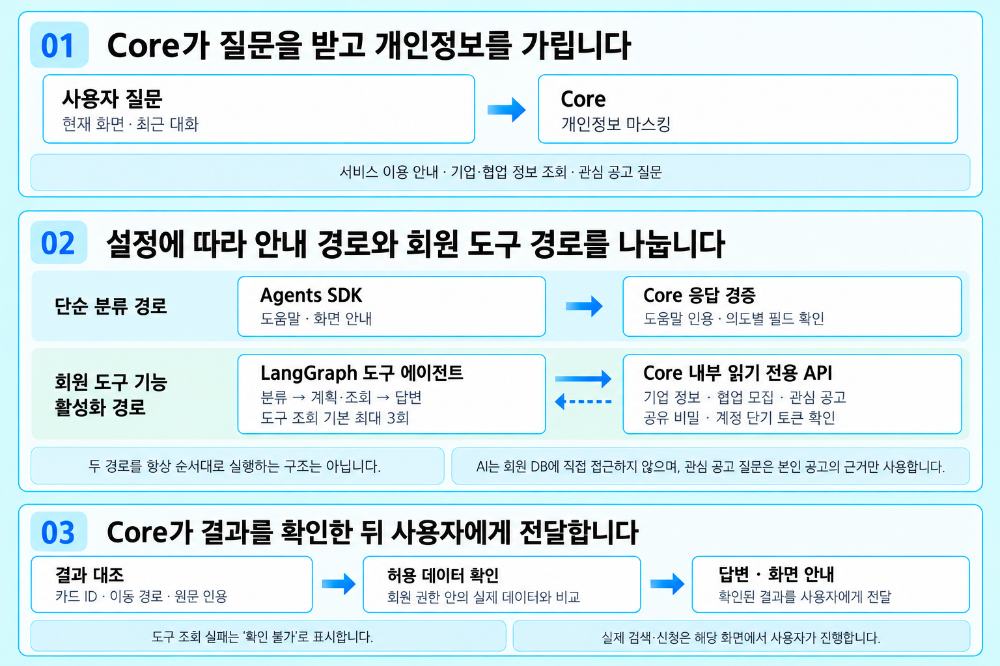
제공 기능: 서비스 이용 안내 · 기업·협업 정보 조회 · 관심 공고 질문
실행 경로
- 단순 분류: Agents SDK로 처리합니다.
- 회원 도구 기능 활성화 시: LangGraph가 분류·계획·조회를 포함한 흐름을 실행합니다.
두 경로는 설정에 따라 나뉘며, 항상 순서대로 실행하지 않습니다.
권한과 결과 검증
- 접근 확인: Core가 개인정보를 마스킹하고, 공유 비밀·계정별 단기 토큰으로 읽기 전용 API 접근을 확인합니다.
- 조회 제한: 도구 조회는 기본 최대 3회이며, 관심 공고 질문은 본인 공고의 근거만 사용합니다.
- 결과 확인: 카드 ID·이동 경로·원문 인용을 허용 데이터와 대조하고, 도구 실패는 ‘확인 불가’로 표시합니다.
구현 근거: 도우미 메시지·권한 경계 · 전체 실행 흐름
맞춤 리포트: 생성과 이메일 발송을 별도 작업으로 관리
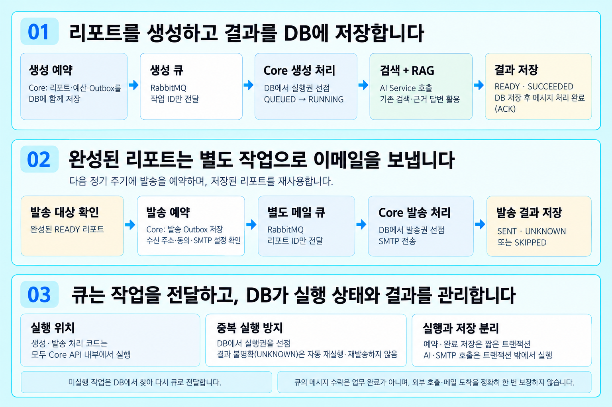
리포트 내용
- 맞춤 추천: 기업 정보·지원 목적을 검색·RRF·LLM 평가에 연결해 최대 3개 사업과 기업마당 원문 근거를 제공합니다.
- 결과 재사용: 생성 당시 입력과 결과를 저장해 웹과 이메일에서 같은 리포트를 제공합니다.
생성과 이메일 발송
- 생성 예약: Core가 리포트·생성 예산·전달할 작업 기록(Outbox)을 함께 저장하고, RabbitMQ에는 작업 ID만 보냅니다.
- 작업 실행: Core 내부 처리 코드가 DB에서 실행 권한을 확보한 뒤 생성합니다. 큐 전달과 실제 완료는 따로 관리합니다.
- 별도 발송: 완성된 리포트를 다음 정기 주기에 메일 큐로 예약합니다. 수신 주소 확인·수신 동의·SMTP 설정이 필요합니다.
- 중복 방지: 결과가 불명확한
UNKNOWN상태에서는 자동 재실행·재발송을 막습니다.
중복 지원·수혜 검토
- 별도 큐와 실행 ID로 처리하고, 두 사업의 공식 자료와 원문 근거를 저장합니다.
- 화면 새로고침은 저장된 상태·결과만 조회하며, 새 AI 분석을 시작하지 않습니다.
구현 근거: 맞춤 리포트 · 생성 큐·Outbox · 별도 메일 발송 · 중복 검토 큐
검증 결과와 해석 범위
| 검증 대상 | 기록된 결과 | 측정 조건과 의미 |
|---|---|---|
| Nori v2 키워드 후보 검색 |
목표 공고 Hit@20 295/300 → 299/300 MRR@20 0.906111 → 0.933764 |
고정 공고 1,422건·개발 중 사용한 AI 작성 질문 300개에서 Nori 설정·사전·동의어 변경 전후 비교. 질문별 목표 공고의 검색 여부·순위 진단이며, 전체 관련 공고 Recall이나 최종 하이브리드 추천 정확도와 구분 |
| RAG 대상 조건 요약 보완 | 기대 응답 상태 12/12 일치 | 공식 공고 질문 6개·가상 질문 6개의 단회 실모델 실행 기록. 의미 검토는 AI-only이며 사람 검토 정확도나 통계적으로 입증된 개선을 의미하지 않음 |
검색 설정 보완으로 기존 누락 5개 중 4개를 회복했으며, 기존 적중 목표의 top-20 이탈은 없었습니다. 다만 순위가 하락한 질문 9개와 남은 누락 1개도 기록해 개선의 범위를 함께 확인했습니다.
평가 근거: Nori v2 비교 보고서 · RAG 후속 평가 보고서
설계에서 얻은 점
- 검색과 자격 판정의 분리: 관련성, 지원 방식, 신청 자격을 한 점수로 섞지 않고 각각 설명할 수 있어야 추천 결과를 해석하기 쉽습니다.
- 생성 모델 밖의 검증: 인용 ID 복원과 원문 대조처럼 결정적으로 처리할 수 있는 부분은 코드가 담당하도록 설계했습니다. 인용의 존재·출처 검증과 답변 전체의 의미적 정확성은 별도로 평가해야 합니다.
- 실패를 포함한 배포 설계: 성공 경로뿐 아니라 오래된 빌드 차단, 상태 확인, 이전 이미지 복구까지 구현해야 배포 절차를 재현할 수 있습니다.
기술 보고서 PDF
검색·RAG·서비스 아키텍처·배포·네트워크를 구조도 중심으로 정리한 37페이지 기술 보고서입니다.